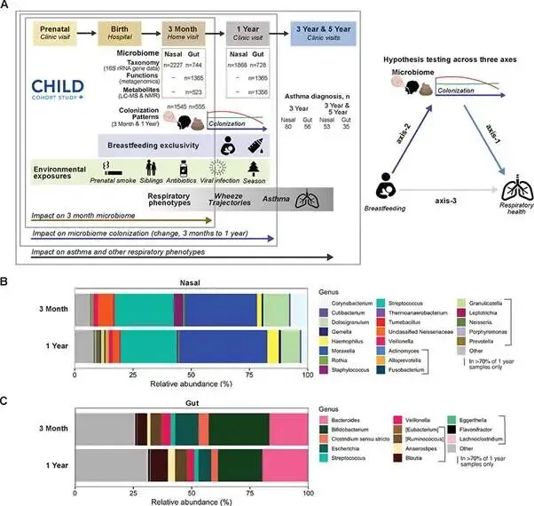
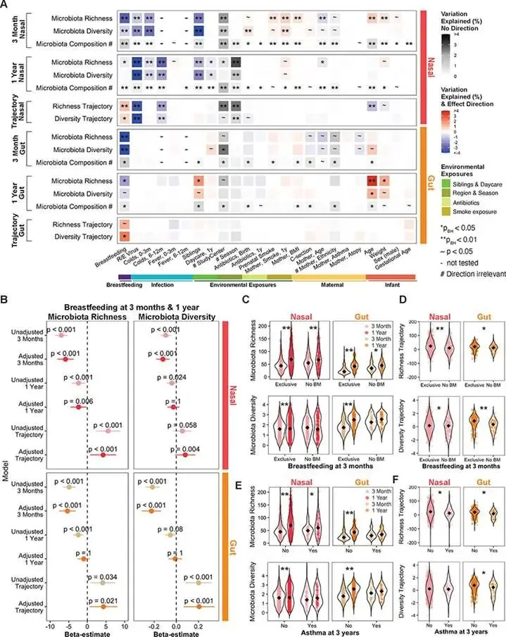
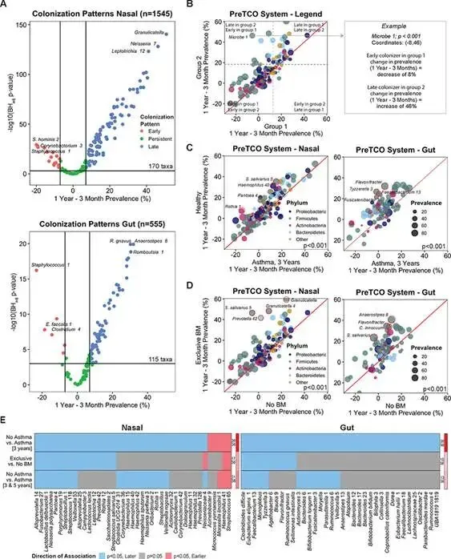
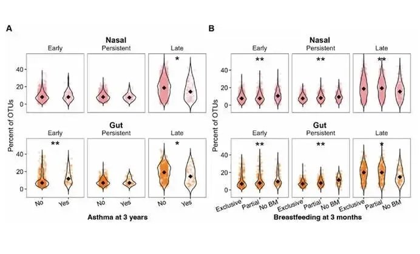
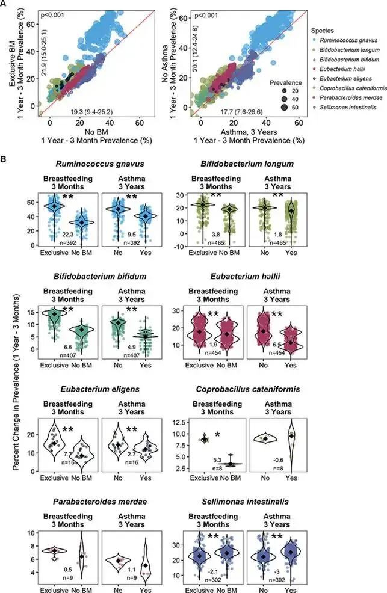
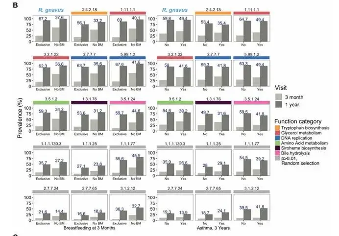
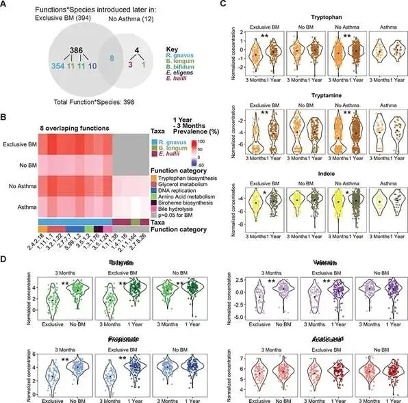
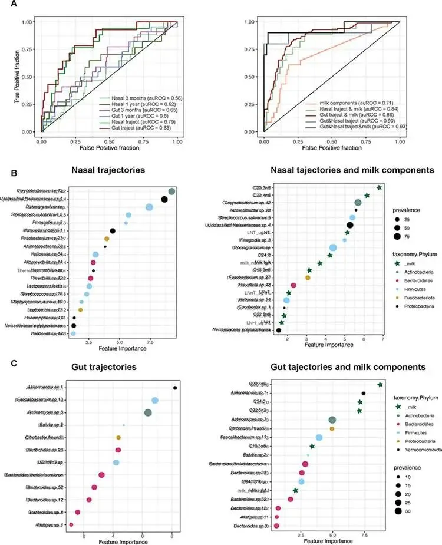
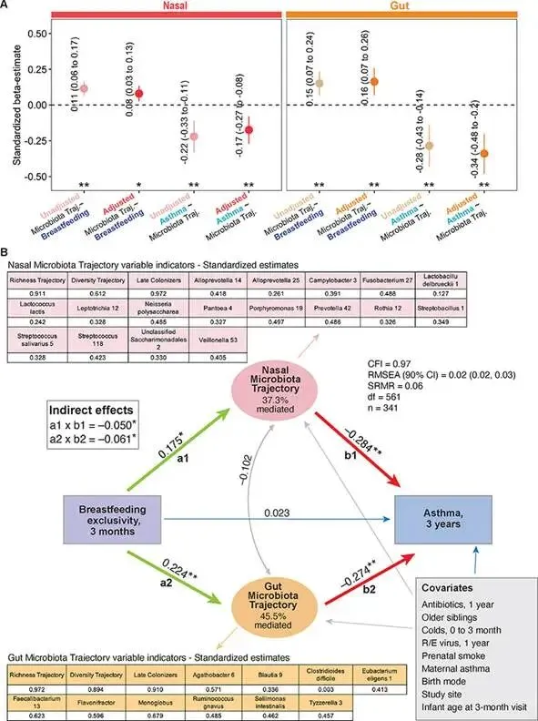

母乳/奶粉？《Cell》证明母乳塑造婴儿肠道微生物组，助力呼吸道发育、成熟
原文：https://mp.weixin.qq.com/s?__biz=MzAwMzIzOTk5OQ==&mid=2247539064&idx=2&sn=fd5123b179d9056fa3f0c73bb603db69&chksm=9b3c2028ac4ba93eafa9aa002e95935808f09eceb2df98c4b4a99803602b0bc52b1b4a1c5ad0#rd 合集：文献速递
一、写在前面
本次分享的是发布于《Cell》(IF=42.5)的文章，感兴趣的同学可以看看原文: Microbial colonization programs are structured by breastfeeding and guide healthy respiratory development.
肠道和鼻腔微生物组与新生儿健康发育密切相关，婴儿的免疫和生理发育受微生物组的影响。婴儿的肠道微生物组和呼吸道微生物组在生命早期发生显著变化，然而，人们对调节这两个重要生态位中新微生物物种和功能增益的时机和机制了解很少
一些研究表明，生命早期的肠道和呼吸道微生物组与呼吸系统疾病有关，此外，鼻腔和气道微生物组组成和成熟模式已反复与未来的呼吸系统健康联系在一起。尽管如此，目前尚不清楚是否仅仅是特定微生物的存在或丰度才是重要的，或者它们到达不同身体部位的时间和顺序是否也可能发挥作用。
婴儿肠道微生物组受母乳喂养和母乳的影响，还确定了与鼻咽微生物群的横断面关联，此外，断奶和引入固体食物与微生物群和免疫系统成熟的显著变化有关。但是，断奶对微生物组成熟和呼吸系统健康的影响尚不清楚。
较长的纯母乳喂养与儿童哮喘风险降低有关。然而，母乳喂养与呼吸系统健康之间关联的机制（微生物或其他）仍然知之甚少。
如果需要单细胞数据分析教学、生信热点全文复现、自测数据个性化分析辅导、实验科研服务和常态化实验学习，欢迎联系客服微信[Biomamba_zhushou]。
二、主要内容
1，分析数千名婴儿出生后 第一年的鼻腔和肠道微生物群发育情况

图 1
对 1,306 名婴儿的肠道微生物组进行了全面的分析，整合了 16S rRNA 和鸟枪法宏基因组测序数据以及用于代谢组学分析的 NMR 和 LC-MS/MS 数据，鼻腔微生物群落以莫拉氏菌属、链球菌属、葡萄球菌属、多洛西格拉姆属、棒状杆菌属和嗜血杆菌属（图1B）为主，个体间差异较大。3个月时，鼻腔群落主要由链球菌[中位数17.7%（IQR 5.7–39.9）]、棒状杆菌[2.3%（0.5–9.1）]、莫拉菌[1.8%（0.1–70.4）]、粒状白云菌[1.8%（0.04–13.4）]和葡萄球菌[0.4%（0.07–2.0）]。3 个月和 1 年的肠道微生物群落以双歧杆菌属、拟杆菌属、埃希氏菌属和 Blautia 属的物种为主（图 1C）。
2，母乳喂养是与鼻腔和肠道微生物群特征相关的最一致的早年因素

图 2
图2A探讨了3个月和1岁时的鼻腔和肠道微生物组概况和早期暴露的关系，发现母乳喂养是两个生态位微生物组丰富度、多样性和组成强度和方向上最一致的关联。
图2B显示鼻腔和肠道微生物组的丰富度和多样性，无论是在3个月时的横截面还是作为轨迹，使用多变量回归调整协变量后仍然与母乳喂养相关（丰富度轨迹;鼻腔：p<0.001，肠道：p=0.021;多样性轨迹;鼻腔：p=0.004，肠道：p<0.001）。
图2C,D示与经历过早期停止母乳喂养的婴儿相比，纯母乳喂养的婴儿的丰富度和多样性随着时间的推移而增加更大（丰富度轨迹 [物种数量变化]，鼻：纯母乳喂养的中位数 [IQR] 24.0 [-3.0–55.0] 与纯母乳喂养的 10.0 [-17.0–41.0]对于非母乳喂养，p<0.001;肠道：20.0 [5.0–34.0] vs. 12.0 [−10.5–25.5]，p=0.004;多样性轨迹[香农指数的变化]，鼻：0.17 [−0.57–0.99] vs. 0.14 [−0.90–0.79]，p=0.028;肠道：0.87 [0.16–1.36] vs. 0.34 [−0.41–0.81]，p<0.001，Mann-Whitney U检验）。
图2E,F示，与 3 岁时被诊断患有哮喘的婴儿相比，健康婴儿的丰富度（鼻腔和肠道）和多样性（肠道）随着时间的推移增加得更大（丰富度轨迹，鼻腔：23.0 [−5.0–54.0] f或健康婴儿 vs. 12.5 [-8.3–35.3] 对于发生哮喘的婴儿，p=0.046;肠道：20.0 [3.0–33.0] vs. 8.5 [−17.8–23.3]，p=0.001;多样性轨迹，鼻：0.22 [−0.60–1.02] vs. 0.16 [−0.54–0.80]，p=0.90;肠道：0.79 [−0.01–1.31] vs. 0.45 [−0.64–0.96]，p=0.004）。
3，微生物组定植模式和“流行轨迹坐标 （PreTCO） 系统”

图 3
图A定义了3种定制模式早期、持续、晚期来表征出生第一年的鼻腔和肠道微生物组变化，并将他们应用分类于每个单元。
图3B是“流行轨迹坐标”，系统地比较具有不同健康表型和生命早期暴露地婴儿地定植模式，将患病率轨迹定义为二维笛卡尔坐标系，每个点代表一个分类单元，其坐标对应于两个表型组的患病率从 3 个月到 1 年的变化。
4，微生物物种的过早增加与母乳喂养和哮喘的提前停止有关

图 4
使用 PreTCO 系统，首先比较了健康婴儿和 3 岁时被诊断患有学龄前哮喘的婴儿的定植模式。发现这两个表型组之间的鼻腔和肠道生态系统在整个社区范围内存在显着差异（p 值< 0.001;图3C）。与被诊断患有学龄前哮喘的婴儿相比，健康婴儿在鼻腔和肠道社区中显示出明显更高的晚期定植者比例（Mann-Whitney U 检验，鼻 p=0.011，肠道 p=0.006;图4A）。
在鼻腔和肠道的社区层面，纯母乳喂养婴儿的患病率从 3 个月到 1 岁增加更大（p 值 <0.001，所有类群患病率的中位数 [IQR] 变化，鼻腔 8.7% [0.9–18.3%]，肠道 10.0% [5.0–15.7%]）与不再母乳喂养的婴儿（4.3% [−1.7–12.8%] 和 3.8% [1.3–8.9%]） 相比， 图3D）
其中与 3 个月时不再母乳喂养的婴儿相比，纯母乳喂养的婴儿在鼻腔和肠道社区中显示出明显更高的晚期定植者比例和较低的早期定植者比例（Mann-Whitney U 检验，鼻部早期、持续性和晚期以及肠道早期和持续的 p 值< 0.001， p 值 = 0.003 表示肠道晚期;图S4b）。我们还分析了混合喂养的婴儿（同时接受母乳和配方奶），揭示了三个喂养组（排他、部分和无BM）的定植模式的单调趋势，表明剂量反应关系--纯母乳喂养的婴儿显示出最高的晚期定植者比例，其次是部分母乳喂养的婴儿，最后是那些在3个月前停止母乳喂养的婴儿，图4B。
5，早期停止母乳喂养会过早获得哮喘相关微生物
使用其泛基因组（即来自进化枝内所有菌株的整组基因）评估了被审查微生物群落的功能潜力，3 个月时的纯母乳喂养和 3 岁时没有哮喘都与这些物种的功能引入延迟表现出密切的关联（p < 0.001，图5A）

图 5
6，瘤胃球菌的色氨酸生物合成将早期停止母乳喂养与哮喘发展联系起来

图 6
首先，我们使用宏基因组学数据检查了 R. gnavus 随时间的流行率。我们发现，与经历过早期停止母乳喂养的婴儿（37.6%，p < 0.001）相比，纯母乳喂养的婴儿（1 岁 – 3 个月患病率：增加 67.2%）和未患哮喘的婴儿与发生哮喘的婴儿相比，R. gnavus 表现出延迟定植模式（59.8% vs 49.4%，p = 0.042,图6).
图5B:在与 R. gnavus 相关的所有 EC 功能中，纯母乳喂养婴儿的功能存在的中位增加为 54.4% （IQR [51.5–56.4%]），而纯母乳喂养的婴儿为 31.7% （IQR [30.2–33.7%）]适用于经历过早停止母乳喂养的婴儿。同样，未患哮喘的婴儿的中位增加率为50.4%（IQR [48.3–52.3%]），而患哮喘的婴儿的中位增加率为40.5%（IQR [39.2–43.0%]）。
7，提前停止母乳喂养和引入婴儿配方奶粉会引发以组成和功能微生物组变化为特征的断奶反应
图7D：分析了3个月大粪便中的SCFA（N=392名婴儿），观察到与纯母乳喂养的婴儿相比，不再母乳喂养的婴儿的SCFA水平显着更高（丁酸盐、丙酸盐和戊酸盐的p值<0.001，醋酸盐的p值为0.07）。此外，当检查这些SCFA在3个月和1年之间的时间变化时，我们发现纯母乳喂养的婴儿的时间显着增加（N=340婴儿，丙酸丁酸盐和戊酸盐的p值<0.001），而在3个月前停止母乳喂养的婴儿中不存在这种独特的模式）。这些结果表明，在 3 个月大之前从母乳转向配方奶的婴儿中，存在潜在的早期断奶反应（SCFA 微生物产生升高）。

图 7
8，出生后第一年的微生物组定植模式和母乳成分可准确预测 3 岁时的哮喘
使用梯度提升决策树训练了一个机器学习模型，以区分被诊断患有哮喘的儿童（鼻部 N = 80 名儿童，肠道数据集 56 名）和健康对照组（鼻部 N = 1327 名，肠道 479 名），图8. 使用肠道和鼻腔轨迹以及牛奶成分获得了最高的模型性能（auROC = 0.93,95%CI [0.86,0.99]，图8A。这些对学龄前哮喘的准确预测证明了微生物在生命第一年定植的重要性，表明了母乳成分的作用，并表明了对早期风险分层的效用。

图 8
9，微生物定植是介导母乳喂养对哮喘保护作用的关键机制
我们使用多变量介导分析和结构方程模型 （SEM） 检查了延迟微生物定植模式是否是母乳 3 个月时的纯母乳喂养与鼻腔（β = 0.175，p = 0.003）和肠道（β = 0.224，p 值 < 0.001）微生物群的延迟（后来）定植直接相关（图9B），具体来说，纯母乳喂养与微生物群丰富度和多样性从 3 个月到 1 年增加、晚期定植者频率更高以及模型中包含的 17 个鼻类群和 10 个肠道类群的定植延迟相关。这些特定的鼻腔和肠道微生物群轨迹也与 3 年时较低的哮喘发病率相关（鼻腔，β = -0.284，p 值 < 0.001;肠道，β = -0.274，p 值 < 0.001）。

图 9
三、总结与展望
总结：
1，鼻腔（肠道）微生物群受到早期断奶的影响，并与哮喘有关
2，母乳喂养起起搏器的作用，协调微生物功能和物种的定植。过早停止母乳喂养似乎会加速微生物物种和功能的获得，从而可能增加患呼吸道疾病的风险。
优势：
1，大样本量使用宏基因组学和代谢组学数据以及从 CHILD 队列的普通人群中获取丰富的纵向元数据和临床哮喘诊断
2，获得了来自多个时间点多个生态位的微生物组数据
3，强大的分析方法，其中包括逐步计算分析（从关联到预测，再到知情的因果推断）和流行轨迹坐标 （PreTCO） 系统，以评估全球和局部尺度的定植模式。
局限：
1，受到现有功能数据库的限制
2，鼻腔样本没有使用鸟枪法宏基因组测序进行分析（由于这些样本的生物量非常低）

如何联系我们

 留一个领取资料、开箱即用的单细胞分析镜像的微信号[Biomamba_zhushou]，方便各位随时交流。同时我们也构建了交流群矩阵，欢迎大家入群讨论。
大家可以阅读完这几篇之后添加给生信入门初学者的小贴士没有检索，就没有发言权
留一个领取资料、开箱即用的单细胞分析镜像的微信号[Biomamba_zhushou]，方便各位随时交流。同时我们也构建了交流群矩阵，欢迎大家入群讨论。
大家可以阅读完这几篇之后添加给生信入门初学者的小贴士没有检索，就没有发言权
已有生信基地联系方式的同学无需重复添加

 您点的每个赞和在看，我都认真当成了喜欢
您点的每个赞和在看，我都认真当成了喜欢